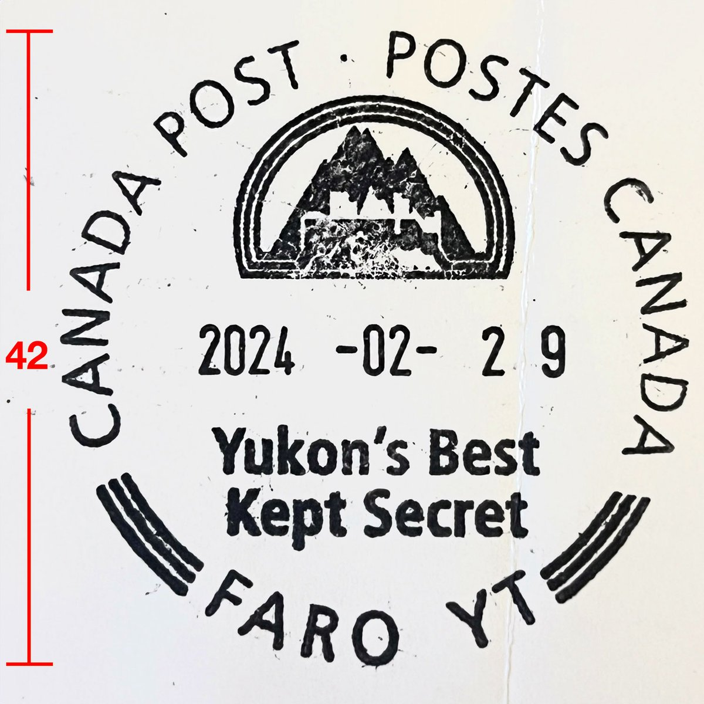

Faro PO pictorial cancel
Yukon's Best Kept Secret · Mountain
- Status
- Active
- Run dates
- ? to present
- Design
- "Yukon's Best Kept Secret"; mountains
- Ink colour
- Black
- Designer
- Unknown
- Post office
- Faro PO
General Delivery
Faro, YT
Y0B 1K0 - Subjects
- mountain, nature
Collect it by mail. Send your stamped covers, with a stamped return envelope, to the post office address above. How to collect pictorial cancels by mail · en français
 Faro POAnniversary
Faro POAnniversary Faro POHighway
Faro POHighway Teslin POHouse
Teslin POHouse